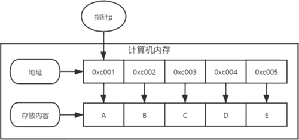
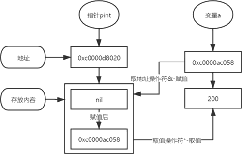

首页 > 编程笔记
Go语言指针的定义和使用（入门必读）
Go 语言中的指针，是一个用来指向内存地址的变量，如下图所示：
在定义变量的时候，计算机都会为变量自动分配内存地址，指针用来存储这些变量的内存地址。
注意，由于不同类型的数据占用不同的存储空间，导致内存地址分配大小各不相同，所以指针只能存放同一类型变量的内存地址，比如整型的指针只能存储整型变量的内存地址。
Go 语言的指针变量也会分配内存地址，但它的值用来存放其他变量的内存地址，指针变量分为两种：类型指针和切片指针，两者说明如下：
Go 语言对指针的使用不同于 C 语言，它对指针设置了约束和拆分，但仍拥有指针高效访问的特点，并且不会发生指针偏移，从而避免了非法修改数据的问题，并且指针的释放和回收也是由 Go 语言的资源回收机制实现。
在学习 Go 语言的指针之前，还需要了解指针的相关概念，如指针变量、指针类型、指针赋值和指针取值。
1) 指针也称为指针变量，即用来存放内存地址的变量，一般情况下，内存地址的数据格式以 0xcXXXXXXX 表示，如 0xc0000180a8 或 0xc0000ac058 等。指针是一个变量，也有自己的内存地址，它存放的内存地址是另一个变量的内存地址，这一概念必须梳理清楚。
2) 指针类型是指针存放的内存地址的大小，比如指针 a 定义为 int 类型，它只能存放整型变量的内存地址，所以在使用指针的时候必须声明指针类型，确保指针只能存放一种数据类型。
3) 指针赋值将某个变量的内存地址赋值给指针，在某个变量前面使用取地址操作符“&”即可获取变量的内存地址。
4) 指针取值从指针变量中通过某个变量的内存地址获取对应的数值，只需在指针变量前面使用取值操作符“*”即可。
根据指针的定义语法，我们可以定义不同数据类型的指针变量，示例代码如下：
定义指针还可以使用内置函数方法 new() 实现，但定义的指针会为其设置默认值，比如定义字符串类型的指针，它将会指向一个空字符串的内存地址；定义一个整型类型的指针，它将会指向一个数值为 0 的内存地址，示例如下：
指针赋值是设置指针变量的值，但指针变量的值只能是某个变量的内存地址；指针取值是通过指针变量的值得到某个变量的内存地址，再从内存地址获取该变量的值。
指针赋值与取值的语法格式如下：
指针赋值和取值是通过取地址操作符“&”和取值操作符“*”实现的，它们是一对互补操作符。“&”取出内存地址，“*”根据内存地址取出对应的数值。
我们根据语法格式编写应用示例，代码如下：
指针赋值和取值的过程通过图解方式演示，如下图所示。
综上所述，指针是 Go 语言的一种特殊变量，它存放的数据是计算机的内存地址，它的数据来自某个变量的内存地址，通过取地址操作符“&”将某个变量的内存地址完成赋值。如果直接从指针取值，只能获得某个变量的内存地址，若要获得某个变量的数值，需要在指针前面使用取值操作符“*”。
取值操作符“*”不仅能通过指针获取某个变量的数值，还能通过指针修改某个变量的数值，示例如下：

图 1 指针图解
图 1 指针图解
在定义变量的时候，计算机都会为变量自动分配内存地址，指针用来存储这些变量的内存地址。
注意，由于不同类型的数据占用不同的存储空间，导致内存地址分配大小各不相同，所以指针只能存放同一类型变量的内存地址，比如整型的指针只能存储整型变量的内存地址。
Go 语言的指针变量也会分配内存地址，但它的值用来存放其他变量的内存地址，指针变量分为两种：类型指针和切片指针，两者说明如下：
- 类型指针允许对数据进行修改，直接使用指针传递数据，无须复制数据，但类型指针不能进行偏移和运算。
- 切片指针是切片类型的指针，它包含起始元素的原始指针、元素数量和容量。
Go 语言对指针的使用不同于 C 语言，它对指针设置了约束和拆分，但仍拥有指针高效访问的特点，并且不会发生指针偏移，从而避免了非法修改数据的问题，并且指针的释放和回收也是由 Go 语言的资源回收机制实现。
在学习 Go 语言的指针之前，还需要了解指针的相关概念，如指针变量、指针类型、指针赋值和指针取值。
1) 指针也称为指针变量，即用来存放内存地址的变量，一般情况下，内存地址的数据格式以 0xcXXXXXXX 表示，如 0xc0000180a8 或 0xc0000ac058 等。指针是一个变量，也有自己的内存地址，它存放的内存地址是另一个变量的内存地址，这一概念必须梳理清楚。
2) 指针类型是指针存放的内存地址的大小，比如指针 a 定义为 int 类型，它只能存放整型变量的内存地址，所以在使用指针的时候必须声明指针类型，确保指针只能存放一种数据类型。
3) 指针赋值将某个变量的内存地址赋值给指针，在某个变量前面使用取地址操作符“&”即可获取变量的内存地址。
4) 指针取值从指针变量中通过某个变量的内存地址获取对应的数值，只需在指针变量前面使用取值操作符“*”即可。
指针的定义
在 Go 语言中使用关键字 var 定义指针变量，在指针变量的数据类型前面加上符号“*”，语法格式如下：var name *type语法说明如下：
- name代表指针变量名，可自行命名，但必须遵从标识符命名规则。
- type是指针变量的数据类型，如数字、字符串、切片等 Go 语言内置的数据类型。
根据指针的定义语法，我们可以定义不同数据类型的指针变量，示例代码如下：
package main
import "fmt"
func main() {
// 定义int类型的指针变量
var pint *int
fmt.Printf("指针值为：%v，空间地址：%v\n", pint, &pint)
// 定义float64类型的指针变量
var pfloat *float64
fmt.Printf("指针值为：%v，空间地址：%v\n", pfloat, &pfloat)
// 定义string类型的指针变量
var pstr *string
fmt.Printf("指针值为：%v，空间地址：%v\n", pstr, &pstr)
// 定义bool类型的指针变量
var pbool *bool
fmt.Printf("指针值为：%v，空间地址：%v\n", pbool, &pbool)
// 定义byte类型的指针变量
var pbyte *byte
fmt.Printf("指针值为：%v，空间地址：%v\n", pbyte, &pbyte)
}
运行上述代码，结果为：
指针值为：<nil>，空间地址：0xc0000d8018
指针值为：<nil>，空间地址：0xc0000d8028
指针值为：<nil>，空间地址：0xc0000d8030
指针值为：<nil>，空间地址：0xc0000d8038
指针值为：<nil>，空间地址：0xc0000d8040
定义指针还可以使用内置函数方法 new() 实现，但定义的指针会为其设置默认值，比如定义字符串类型的指针，它将会指向一个空字符串的内存地址；定义一个整型类型的指针，它将会指向一个数值为 0 的内存地址，示例如下：
package main
import "fmt"
func main() {
ptr := new(int)
fmt.Printf("ptr指向的变量值为：%v，空间地址：%v\n", *ptr, &ptr)
}
运行上述代码，结果为：
ptr指向的变量值为：0，空间地址：0xc000006028
指针的使用
在 Go 语言编程中，所有变量先定义后使用，当指针变量定义之后，下一步对变量进行赋值和取值操作。指针赋值是设置指针变量的值，但指针变量的值只能是某个变量的内存地址；指针取值是通过指针变量的值得到某个变量的内存地址，再从内存地址获取该变量的值。
指针赋值与取值的语法格式如下：
var name int = 200 var ptr *int // 指针赋值，将name的内存地址赋值给ptr ptr = &name // 指针取值，在ptr前面使用“*”获取name的值 name1 := *ptr语法说明如下：
- name 代表变量名，数据类型为整型，变量值为 200。
- ptr 是指针变量，设置为整型。
- 指针赋值通过取地址操作符“&”将变量 name 的内存地址赋值给指针变量。
- 指针取值通过取值操作符“*”从指针变量存储的内存地址获取变量 name 的值。
指针赋值和取值是通过取地址操作符“&”和取值操作符“*”实现的，它们是一对互补操作符。“&”取出内存地址，“*”根据内存地址取出对应的数值。
我们根据语法格式编写应用示例，代码如下：
package main
import "fmt"
func main() {
var a int = 200
fmt.Printf("变量a的空间地址：%v\n", &a)
// 定义int类型的指针变量
var pint *int
fmt.Printf("指针值为：%v，空间地址：%v\n", pint, &pint)
pint = &a
fmt.Printf("指针值为：%v，空间地址：%v\n", pint, &pint)
fmt.Printf("指针值的值为：%v，空间地址：%v\n", *pint, &pint)
}
运行上述代码，结果为：
变量a的空间地址：0xc0000ac058
指针值为：<nil>，空间地址：0xc0000d8020
指针值为：0xc0000ac058，空间地址：0xc0000d8020
指针值的值为：200，空间地址：0xc0000d8020
- 指针 pint 定义的时候为空指针，其内存地址为 0xc0000d8020。
- 通过取地址操作符“&”将变量 a 的内存地址赋值给指针 pint，指针 pint 的内存地址保持不变，其值变为变量 a 的内存地址。
- 最后在指针 pint 前面使用取值操作符“*”，从指针 pint 的值（即变量 a 的内存地址）取出变量 a 的数据，指针 pint 的内存地址保持不变。
指针赋值和取值的过程通过图解方式演示，如下图所示。

图 2 指针赋值与取值图解
图 2 指针赋值与取值图解
综上所述，指针是 Go 语言的一种特殊变量，它存放的数据是计算机的内存地址，它的数据来自某个变量的内存地址，通过取地址操作符“&”将某个变量的内存地址完成赋值。如果直接从指针取值，只能获得某个变量的内存地址，若要获得某个变量的数值，需要在指针前面使用取值操作符“*”。
取值操作符“*”不仅能通过指针获取某个变量的数值，还能通过指针修改某个变量的数值，示例如下：
package main
import "fmt"
func main() {
var b int = 100
var pint *int
fmt.Printf("指针存放的变量值为：%v，空间地址：%v\n", pint, &pint)
// 将变量b的内存地址赋值给指针pint
pint = &b
fmt.Printf("指针存放的变量值为：%v，空间地址：%v\n", *pint, &pint)
// 通过取值操作符“*”修改变量b的值
*pint = 666
fmt.Printf("指针存放的变量值为：%v，空间地址：%v\n", *pint, &pint)
}
运行上述代码，结果为：
指针存放的变量值为：<nil>，空间地址：0xc000006028
指针存放的变量值为：100，空间地址：0xc000006028
指针存放的变量值为：666，空间地址：0xc000006028
关注公众号「站长严长生」，在手机上阅读所有教程，随时随地都能学习。内含一款搜索神器，免费下载全网书籍和视频。

微信扫码关注公众号